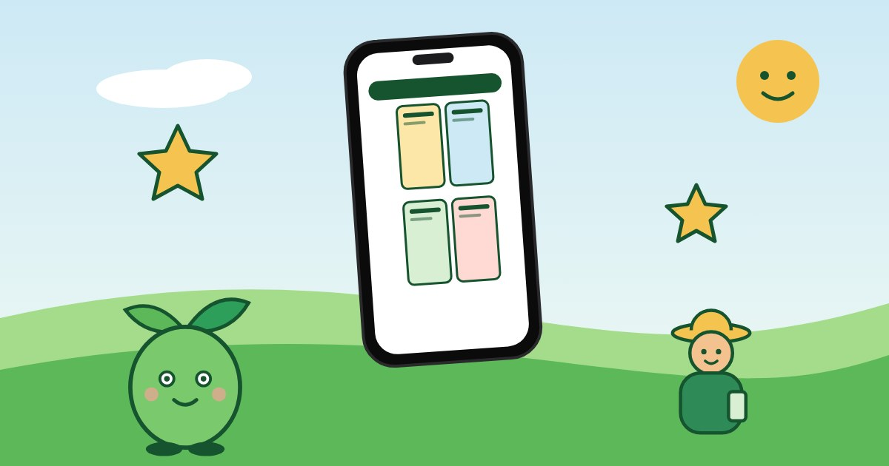

Uji Coba Lapangan Aplikasi AgriVoice AI Bersama PPL dan Kelompok Tani
Dinas pertanian menggelar program percontohan pemanfaatan asisten penyuluhan suara di sejumlah balai penyuluhan pertanian.

Program modernisasi penyuluhan pertanian terus bergulir. Bertempat di Balai Penyuluhan Pertanian (BPP), puluhan Petugas Penyuluh Lapangan bersama perwakilan kelompok tani mengikuti sesi uji coba lapangan aplikasi AgriVoice AI.
Selama ini, kendala utama para penyuluh adalah beban administrasi pelaporan pasca-kunjungan. Menulis formulir fisik berlembar-lembar di tengah sawah dan mengetik ulang laporan di kantor sering kali memakan waktu berjam-jam yang seharusnya bisa digunakan untuk pendampingan petani secara langsung.
Dengan hadirnya AgriVoice AI, penyuluh cukup berbicara secara wajar saat berdialog dengan petani di pematang. Aplikasi merekam, menstranskripsi, dan mengelompokkan data penting seperti luas lahan, varietas benih, kebutuhan pupuk, dan keluhan hama secara otomatis.
Para penyuluh mengapresiasi kemampuan aplikasi mengenali istilah bahasa daerah (Jawa dan Sunda) yang umum digunakan petani lokal, serta dukungan foto dengan koordinat GPS dan timestamp otomatis sebagai bukti autentik kunjungan.
Data kunjungan yang tersinkronisasi langsung masuk ke dasbor pimpinan dinas, memberikan visibilitas real-time mengenai kondisi ketahanan pangan dan sebaran kegiatan penyuluhan per wilayah binaan.